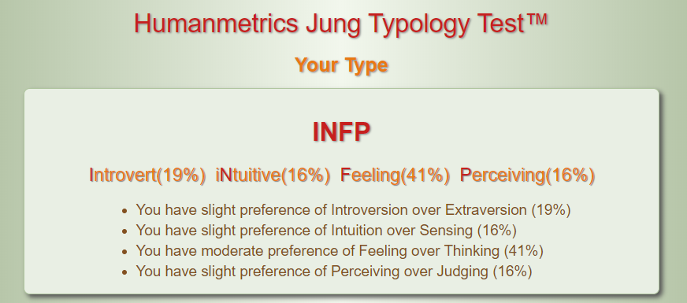
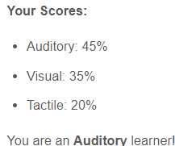
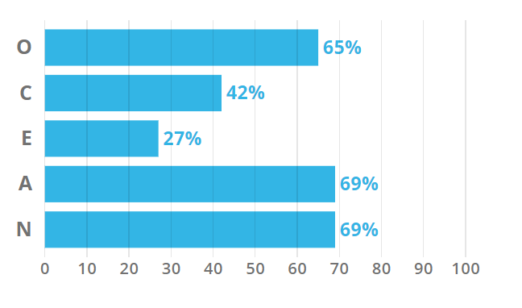

I am not comfortable with sharing my real face so here's an anime picture that I think accurately depicts my appearance.
Introduction
Index:
- Personal Information
- Interest in IT
- Ideal Job
- Profile
- Project Ideas
Personal Information
Basic ID
- Full Name: Benjamin Anh-Khoi Phan
- Student Number: S3854890
- Email Address: s3854890@student.rmit.edu.au
Background Information
Interest in IT
What is your interest in IT?
My interest in IT is quite vague, I am not exactly interested in a specific field but my aim is probably to end up doing something related to my hobbies in someway, which means it's related to video games or anime. Otherwise, my interest in IT is related to seeing the new innnovations and inventions that leading IT figures come up with and wondering if I can do the same. In a way, I want to leave a legacy or something of the likes so that people can remember me as that one guy who created something that changed how the world works in someway, whether small or big.
When did your interest in IT start?
I don't remember. Honestly, there's no specific magical moment that made me wanted to do IT, it was just an industry that started to be in my interests as I grew up. From the first robots to the cutting-edge prototype technology that companies showcase to the public once in a while, I guess I felt somewhat like a child whenever I see those things because it's something new, a fresh innovation made by people who enjoys their work. Additionally, through their work, they help everyone through small and big ways, and that kind of thing made me wonder if I can do the same. And from there, I guess that wonderment just grew over the years to interest and that lead me to RMIT in hopes of achieving the same things.
My IT Experience
The short answer would be no. The long answer would be... I am a total newbie when it comes to the technical side, which is basically everything. The only experience I had was very, very, very basic programming and a somewhat better Informatics subject that I was taught in High School. Even then, the lessons weren't very thorough and I was generally very confused, which meant I couldn't grasp onto any important or relevant skills that could help me in my path to becoming a programmer or having a stable IT job. So my current experience with IT consists of the lessons I learn from RMIT's lectures and applying them to tutorials and practicals.
Why did you choose to come to RMIT?
Simply because it has the reputation of being the best Australian university when it comes to IT. Which means, if I graduate from RMIT, I get a better chance when employers examine my profile. I can't really say I have a personal opinion towards RMIT so the university is just an enabler that help me get started on my IT path.
What do you expect to learn during your studies
Well, I expect to learn the required skills that the IT industry expects from everyone. Basic skills that allow me to understand how the intricacies of IT work and appreciate how amazing IT can be. Things like learning how to code, what the IT industry is looking for, etc... In general, I just want to be able to operate independently as a reliable programmer and IT person that knows their stuff. Otherwise, I actually don't really expect much else as I am still new to how IT works so I don't really have any knowledge to form expectations.
Ideal Job
I've got three companies that are basically my dream job to work for any of them; Blizzard, RiotGames and Valve.
Unfortunately, none of the companies has any open positions in Australia but I also don't mind having to move overseas for the work. Below are links to the companies' job openings for any IT related position as working in the company is already a dream job for me so aside from programming, I don't have a specific preference. Doubly unfortunately, at the time of making this, none of the companies have any open position regarding programming... Ah well, it's a dream job after all, I don't mind waiting:


All of the jobs have some harsh requirements but well, it's a dream job that I have to work towards as my goal so it's expected. I'll talk in detail about Valve since that's my most preferred place to work at.
What about this job appeals to you?
Well, it's obviously the fact that the company is at the top of the industry as a well-respected name. Not only do they have the latest software and hardware there, the work that they do are both innovative and industry-changing. Additionally, the workplace according to a lot of former and current employees are very pleasant to work at and has satisfactory work confiditons.
What skill requirements does this job have?
It's listed on the website but I'll summarise it here; Strong grasp of C++, 4+ years of profressional software development experience, strong software engineering skills, good communication and teamwork skills and finally, the ability to finish work independently.
What are the skills that you currently have compared to the requirements?
It's listed above. Though the short answer would be a hilariously depressing nothing, since I am a total newbie so the job is still quite far off in the future.
What's your plan on getting this job?
I still haven't graduated university yet so obviously that first... While I still don't have any concrete plans, or any for that matter, the general direction would probably be working for any IT-related company and steadily transition towards the gaming industry while gaining the needed experience and required skills to get the job. That's basically it for now, since I kind of need to learn the basics before thinking any further.
Profile
These are my results for typical tests that employers use to get more information on potential employees...
Myers-Briggs Test Result
Learning Style Test Results
The Big Five Personality Test Results
What do the results of these tests mean to you?
Nothing. While they are surprisingly accurate tests, it just tells me things I already knew about myself. I am accepting of myself and while I tend to be negative, I have already wholeheartedly accept who I was, am, can or will be. I suppose I should take this as a way to learn of my faults and try to fix them but like I said, I accept my faults as things that make up the person known as "Benjamin Phan" because I would be another person entirely without them.
How do you think these results may influence your behaviour in a team?
The results themselves? Nothing. As a team member, I will try my very best as Benjamin Phan. The only thing these results might influence is if my team is upset with me, I can look over my flaws more clearly and try to work things out between us with full understanding of my fault. Though, like I said above, I already know all of these things so it's practically useless.
How should you take this into account when forming a team?
Be honest and upfront. Introduce myself, faults and all, and establish a working relationship between us, then using those faults as a way to bond with other team members as a way to know each other better. If you mean who I will choose to be my team using these results as a base, then obviously I am going to choose people who are similar to me. The test results aren't a necessary part to forming connections with other people, honesty and understanding is.
Project Idea
This is a vague idea of a project that I want to someday be able to create. I obviously recognise the hugely ambitious idea and the impossibility of it all, however, this is my dream projet and I will do it step-by-step, even starting as small as coding the title screen. This is also obviously a company effort rather than a single person's so I'll probably tune it down as I learn more about IT and programming.
Overview
The project would be about developing my dream game. It’s a very ambitious project as the game I want to create is an MMOARPG, Massive Multiplayer Online Action Role Playing Game, based on a series of illustrations made by artists on the website Pixiv. The project is called Pixiv Fantasia, and it was started as a theme to challenge people to create more art under the Fantasy category. The series basically revolves around anime-styled illustrations based on a war-filled fantasy world envisioned by multiple people with proper factions, history and lore. They even have a page full of information and rules on what races, creatures or magic that currently exist in the story for artists to adhere to if they want to add to the collection. What I want to do is to bring that amazing world to life, as a game that people can enjoy together, bringing communities closer and be astonished from the rich world of Pixiv Fantasia just like I was when I first discovered it.
Motivation
My motivation for creating this game is like I said above, to bring a fascinating world to life. Many people already use Pixiv as a platform for their art, and even more play MMORPGs as their main source of entertainment. Based on the website MMO Population in 2019, the top 3 MMOs each have an active player base of over 1 million players and more than 10 million total players. Likewise, Pixiv has confirmed over their announcement that there are over 10 million registered users, including both artists and non-artists, and is still growing to this day. This means that this project can bring entertainment that appeals to at least 11 million people with their interests of anime art and MMOs.
Description
Play it as a game, live it as a second life or enjoy it as an interactive art piece, the choice is there for the player to choose. Freedom to do whatever they want as they reach for the infinite possibilities, that is my main goal and the ultimate feature of my ambitious project.
Tools and Technologies
The technology required are the standards of creating an MMORPG. Software would involve using either Unity Engine or Unreal Engine as the main way to create the game with additional modelling software and audio studios to create and mix sounds. Additionally, hardware would include computers, server databases, headphones, typical computer hardware and more. Furthermore, equipment also needs to provide for artists who would work closely with the game development team to create the world from scratch as accurately as possible. Art studios, audio rooms and writing rooms are also needed for each employee to maximise their work regarding their expertise.
Skills Required
Unity/Unreal engine expertise, proper vision of the project, good management skills, strong communication skills, strong grasp of video game development theory and dozens more. As I already admitted, this isn’t a one person project but a company-sized one, which means that other than the skills I already listed, things like audio expertise and game art would be out of my field of work. I fully believe that this is achievable for a huge company like Valve or Blizzard, or even a passionate small-time studio, however the chances of the project actually happening are obviously quite low which is why I want to learn the basics of a programmer and form my own gaming studio to start this dream project.
Outcome
The outcome if the project succeeds obviously means that customers/users are able to experience a whole new virtual world that allows them to choose from infinite possibilities. Which in layman’s terms, means that MMO players would get a new fantastic game that introduces them to the world of Fantasia while artists on Pixiv would get the recognition they deserve while getting paid for their passion/hobby. Furthermore, if the game succeeds then even more people would join it and eventually create new standards for later MMOs to achieve and if it persists for a long time, would change the gaming industry as a whole. With this, my goal of bringing Fantasia to life would be achieved, satisfying my passion and dream project.